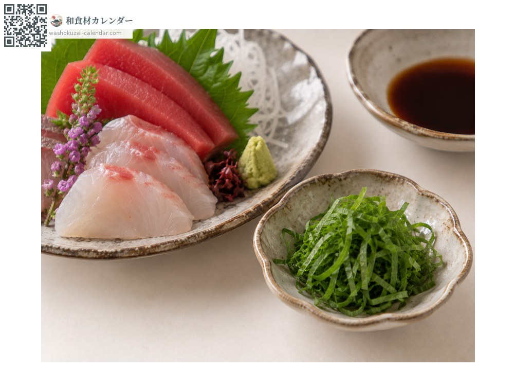
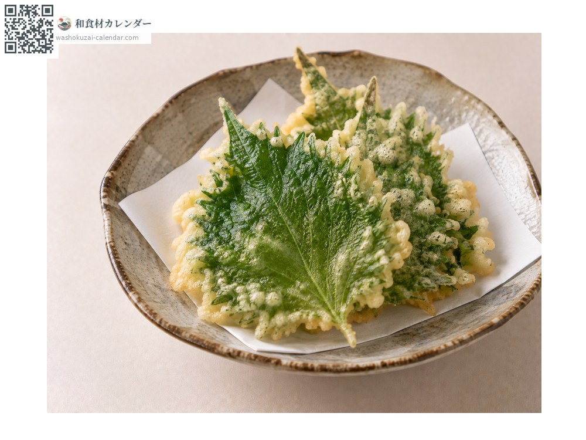
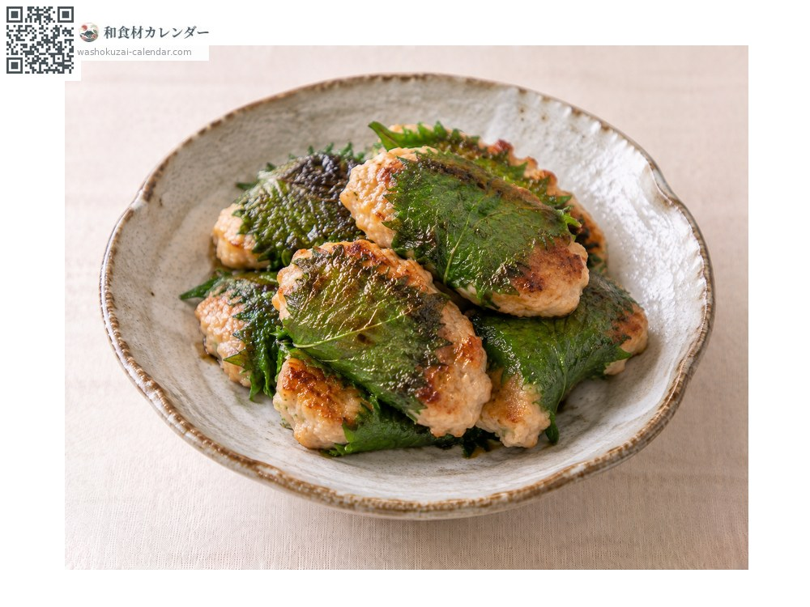
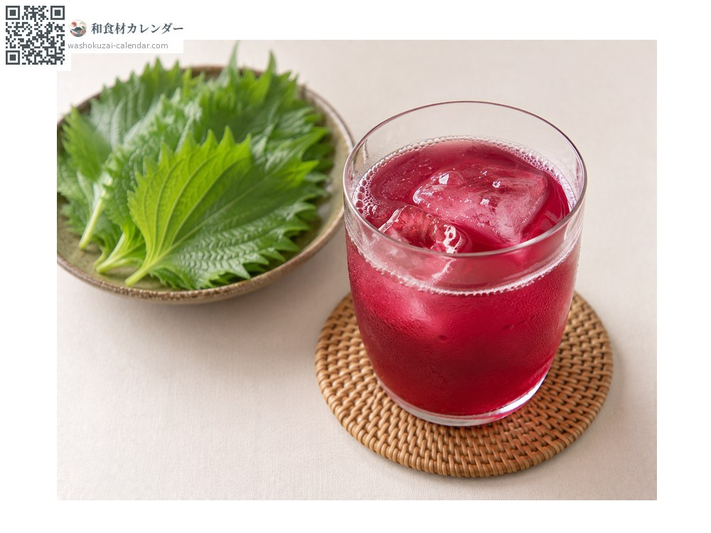

ผัก
ใบชิโสะ
シソ しそ shiso
ชื่ออื่นshiso
อร่อยที่สุดในเดือน มิ.ย., ก.ค., ส.ค., ก.ย.

ช่วงที่อร่อยที่สุด
ม.ค.
ก.พ.
มี.ค.
เม.ย.
พ.ค.
มิ.ย.
ก.ค.
ส.ค.
ก.ย.
ต.ค.
พ.ย.
ธ.ค.
ช่วงอร่อยที่สุดมีจำหน่าย
วิธีปรุง

ใช้เป็นเครื่องเคียง
ซอยโรยบนซาชิมิหรือเส้น

เทมปุระ
ชุบแป้งด้านหลังใบด้านเดียวแล้วทอด

ห่อใบชิโสะย่าง
ห่อเนื้อหรือปลาแล้วย่าง

น้ำคั้น
ต้มใบชิโสะแดงทำน้ำหวาน
วิธีเลือก
ใบสีเขียวสดและกลิ่นหอมแรง ไม่มีรอยช้ำหรือจุดดำ
วิธีเก็บรักษา
แช่ก้านในน้ำแล้วตั้งไว้ในตู้เย็น หรือห่อกระดาษชื้นแล้วปิดสนิท
แหล่งผลิตหลัก
เกร็ดน่ารู้
ชิโสะเขียวใช้เป็นเครื่องเคียง ส่วนชิโสะแดงใช้ทำบ๊วยดองและน้ำหวาน เป็นพันธุ์ย่อยของพืชชนิดเดียวกัน